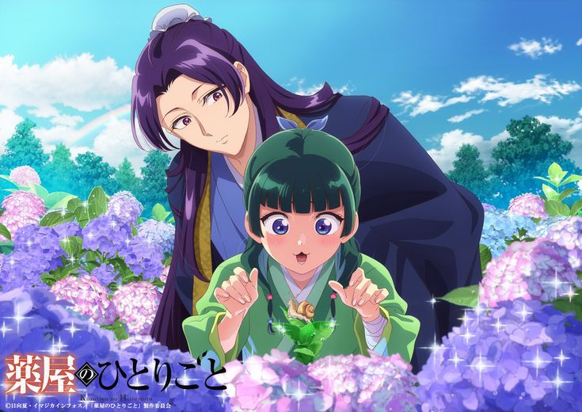
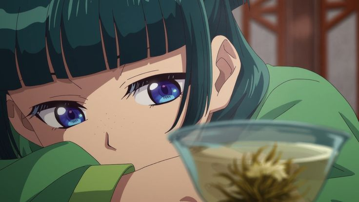

Đừng chỉ hỏi “Ai làm?”, hãy hỏi “Điều gì đã xảy ra?”
Một vụ việc bí ẩn thường khiến độc giả lập tức tìm người đáng nghi nhất. Nhưng Maomao có một lợi thế khác: cô không chỉ quan tâm đến con người mà còn chú ý đến nguyên nhân vật lý có thể dẫn đến sự việc.
Khi đọc một vụ án trong truyện, hãy bắt đầu bằng những điều quan sát được:
- Ai là người đầu tiên phát hiện sự việc?
- Những người có mặt đã tiếp xúc với vật gì, ăn gì hoặc làm gì?
- Triệu chứng hay phản ứng nào xuất hiện trước?
- Có điều gì khác thường so với sinh hoạt bình thường?
Cách tiếp cận này giúp người đọc tránh chọn thủ phạm chỉ vì nhân vật ấy có vẻ đáng ngờ. Một lời nói dối có thể cho thấy người đó đang che giấu điều gì, nhưng chưa đủ chứng minh họ là người gây ra sự việc.
Vật dụng bình thường có thể là manh mối
Trong thế giới của Maomao, kiến thức về thảo dược, dược liệu và độc chất là công cụ quan trọng để giải quyết bí ẩn. Điều đáng học hỏi ở cách xây dựng truyện là vật dụng chỉ trở thành manh mối khi được đặt vào đúng hoàn cảnh.

Hãy thử quan sát một chi tiết xuất hiện trong cảnh truyện: món ăn, đồ trang điểm, vật chứa, cây cỏ hoặc một thói quen sinh hoạt. Nó có thực sự bất thường không? Nhân vật nào chú ý đến nó? Chi tiết đó có liên quan đến những dữ kiện khác không?
Một vật thể xuất hiện nổi bật chưa chắc là đáp án. Ngược lại, một vật rất bình thường cũng có thể trở nên đáng chú ý nếu nó không phù hợp với bối cảnh.
Đây là nguyên tắc quan trọng khi đọc truyện trinh thám: manh mối không tự giải thích chính nó; người đọc phải tìm mối liên hệ giữa nó và những sự kiện khác.
Quan sát Maomao quan sát người khác
Maomao thường không phản ứng theo cách mà những người xung quanh mong đợi. Sự tò mò và kiến thức chuyên môn khiến cô chú ý đến những vấn đề người khác có thể xem là không đáng kể.
Khi cô tỏ ra quan tâm đặc biệt đến một chi tiết, đừng vội kết luận rằng đó chắc chắn là chìa khóa của vụ án. Hãy ghi lại điều cô nhận thấy, những dữ kiện đã xuất hiện trước đó và điều gì vẫn chưa được giải thích.
Cũng nên để ý phản ứng của những nhân vật khác. Ai né tránh câu hỏi? Ai có vẻ biết nhiều hơn những gì họ nói? Ai đưa ra lời giải thích quá nhanh?
Những biểu hiện này có thể tạo ra giả thuyết, nhưng chúng cần được kiểm tra bằng diễn biến tiếp theo.
Đừng để kiến thức chuyên môn đánh lừa bạn
Một nhân vật có kiến thức về độc chất không đồng nghĩa mọi sự việc đều do độc chất gây ra. Đây cũng là một cái bẫy đối với người đọc: khi đã biết thế mạnh của Maomao, chúng ta có thể cố diễn giải mọi chi tiết theo hướng hóa học hoặc y học.
Một giả thuyết tốt phải giải thích được các dữ kiện quan trọng, đồng thời không mâu thuẫn với những gì đã được xác nhận trong truyện.
Nếu còn nhiều khả năng khác nhau, hãy giữ chúng ở trạng thái giả thuyết. Đừng biến suy đoán thành kết luận chỉ vì nó nghe hợp lý.
Công thức soi án của READIE
Khi gặp một vụ việc bí ẩn, bạn có thể lập bảng nhỏ:
| Điều cần ghi | Câu hỏi |
|---|---|
| Sự kiện | Chuyện gì đã thực sự xảy ra? |
| Manh mối | Chi tiết nào được nhấn mạnh hoặc lặp lại? |
| Nhân vật | Ai có thông tin, động cơ và cơ hội? |
| Giả thuyết | Các giải thích nào phù hợp với các dữ kiện? |
| Kiểm chứng | Chi tiết nào có thể bác bỏ giả thuyết đó? |
Cách làm này giúp bạn vừa tận hưởng cảm giác phá án vừa tránh bị dẫn dắt bởi một nhân vật đáng ngờ hoặc một chi tiết được tác giả cố tình làm nổi bật.